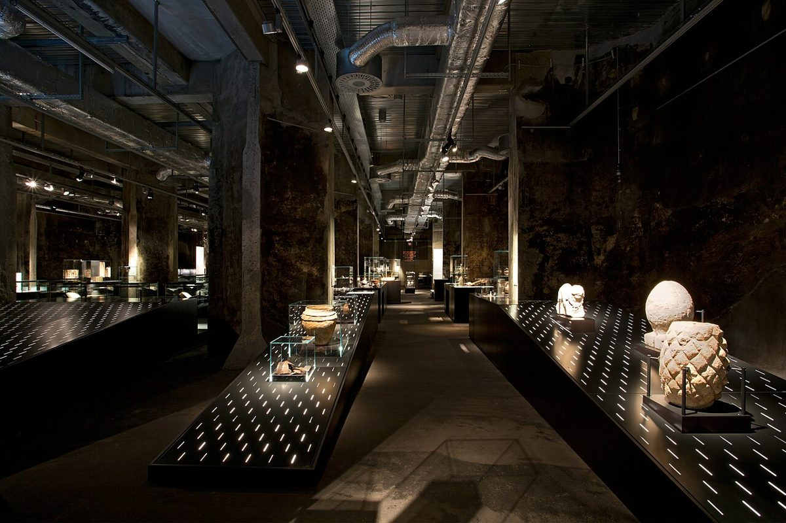

Entdeckungsreise ins Ruhrgebiet: Das UNESCO-Welterbe Zollverein

Das Ruhrgebiet ist bekannt für seine industrielle Vergangenheit, die heute in Form von faszinierenden Denkmälern und Museen lebendig wird. Eines der beeindruckendsten Zeugnisse dieser Ära ist das UNESCO-Welterbe Zollverein in Essen. Hier erfährst du alles, was du für einen unvergesslichen Besuch wissen musst – von der Anreise bis zu den Highlights.
Wie kommt man zum Zollverein?
Das Zollverein ist gut mit öffentlichen Verkehrsmitteln erreichbar. Von Essen Hauptbahnhof fahren regelmäßig Busse direkt zum Gelände. Wer mit dem Auto anreist, findet ausreichend Parkplätze vor. Eine Anreise mit dem Fahrrad ist ebenfalls möglich, da das Ruhrgebiet über ein gut ausgebautes Radwegenetz verfügt.
Wann ist die beste Reisezeit?
Das Zollverein ist das ganze Jahr über einen Besuch wert. Im Frühling und Sommer kannst du die Außenanlagen in voller Pracht genießen, während die kühleren Monate ideal für ausgiebige Museumsbesuche sind. Besonders empfehlenswert ist ein Besuch während der Lichtkunstausstellungen oder des Winterzaubers, der das Gelände in eine märchenhafte Kulisse verwandelt.
Top Highlights im Zollverein
1. Das Ruhr Museum: Hier tauchst du tief in die Geschichte des Ruhrgebiets ein. Die Ausstellungen sind informativ und interaktiv gestaltet.
2. Die Kohlenwäsche: Dieses beeindruckende Industriedenkmal bietet nicht nur einen Blick in die Vergangenheit, sondern auch eine spektakuläre Aussichtsplattform mit Blick über das gesamte Gelände.
3. Der Denkmalpfad: Ein Spaziergang entlang dieses Pfades führt dich zu den wichtigsten Stationen der ehemaligen Zeche und vermittelt ein lebendiges Bild des industriellen Alltags.
4. Das Red Dot Design Museum: Ein Muss für Designliebhaber! Hier werden innovative und preisgekrönte Produkte aus aller Welt ausgestellt.
Kulinarische Genüsse rund ums Zollverein
Nach einem erlebnisreichen Tag solltest du dich unbedingt mit regionalen Spezialitäten stärken. In der Nähe des Zollverein findest du gemütliche Lokale, die typische Ruhrgebiets-Küche servieren. Probier unbedingt mal die Currywurst, die hier eine besondere Tradition hat. Wer es lieber süß mag, sollte sich eine Pfeffernuss oder einen Printen gönnen – beides köstliche regionale Leckereien.
Das Zollverein ist nicht nur ein Ort der Geschichte, sondern auch ein lebendiger Kulturstandort, der immer wieder neue Veranstaltungen und Ausstellungen bietet. Egal, ob du ein Geschichtsinteressierter, Designer oder einfach nur ein neugieriger Reisender bist – hier wirst du garantiert fündig!
Haiktec
- Entdecke Sachsens Schätze: Der ultimative Reiseführer für Dresden und Umgebung
- Vereinsfinanzplaner & Event-Tracker für eine transparente Verwaltung
- Hundepflege leicht gemacht: Effektive Tipps für einen entspannten Alltag
Text mit KI erstellt und automatisch geprueft.